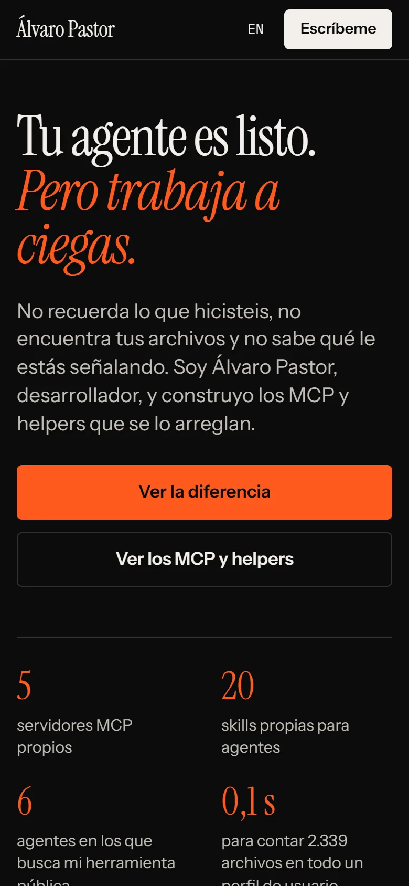

Tenía 20 skills y 6 agentes en mi portada. Y aun así no se entendía.
Tenía 5 servidores MCP, 20 skills y 6 agentes en mi portada, y aun así no se entendía para qué servía. Creía que era el diseño. Era otra cosa. Aquí tienes el antes y después, y al final una prueba de 5 minutos para saber si a tu web le pasa lo mismo.


Lo que puedes aplicar en tu web: un titular que explique el beneficio, un ejemplo que lo sostenga y un siguiente paso claro. No necesitas hacer software para aplicar estas ideas.
Alcance de este caso: es una comparación del mensaje y la presentación. Las capturas muestran qué cambió; no demuestran un aumento de ventas.
Respondía a una pregunta que el lector no había hecho.
Tenía 5 servidores MCP, 20 skills, 6 agentes y búsquedas en 0,1 s. Y aun así, la portada de Agent History Search no dejaba claro para qué servía. Eso me costó una portada entera que tuve que rehacer en 12 cambios.
Creía que el problema era el diseño. Era el orden: había puesto arriba lo que a mí me enorgullecía de cómo funcionaba por dentro, y justo debajo dos botones compitiendo por el clic.
Cuando la miré con los ojos de alguien que llega por primera vez, me di cuenta del fallo: si no sabes qué es un servidor MCP ni cómo está construido el sistema por dentro, esa pantalla te obliga a hacer un esfuerzo mental para adivinar para qué sirve.
Estaba explicando la maquinaria antes que el beneficio. Quien entraba necesitaba primero una respuesta más sencilla: ¿qué puedo hacer con esto que ahora no puedo?
A esto lo llamo el síndrome de la «cifra de escaparate». En mi web eran «5 servidores MCP, 20 skills y 6 agentes». En una tienda o servicio suelen ser «+10 años de experiencia», «metodología 360°» o «más de 500 referencias». Estos datos pueden aportar confianza, pero no sustituyen la explicación de qué gana quien acaba de entrar.
En el móvil, cada línea tiene que ganarse su sitio.
Compara qué ocupa el primer plano en cada captura. Antes: cifras internas. Después: una situación de uso. El cambio no consiste en añadir información, sino en decidir qué merece aparecer primero.


Cambié frases concretas, no solo colores.
No necesitas una agencia ni saber diseño. Yo no usé ninguna de las dos cosas: abrí mi propia página y la revisé bloque a bloque, preguntándome qué entendería alguien que no me conoce de nada. En una sola sesión salieron 12 cambios, todos señalados sobre la web real, sin bocetos interminables. Puedes hacer lo mismo con la tuya en una tarde.
Primero la miré en el móvil. Abrí la portada en el teléfono tal y como la ve alguien que llega desde un enlace, sin hacer scroll, para comprobar qué ocupaba los primeros centímetros de pantalla.
Después señalé cada punto confuso con una frase directa. En lugar de pedir «hazlo más bonito», señalé exactamente qué frase confundía al visitante. Por ejemplo, esta fue una de las notas literales que dejé:
«El usuario no sabe qué es “ampliarlo”. Ponlo con palabras muy sencillas.»
Por último, revisé el resultado y volví a señalar. Repetí el proceso para quitar frases que necesitaban una explicación. El siguiente paso es comprobarlo con alguien ajeno al proyecto.
Los 4 cambios reales de mi portada (y cómo aplicar cada uno en la tuya).
Cada cambio incluye la versión anterior, la nueva y una idea para tu web. Léelos en el orden que quieras; empieza por el que reconozcas en tu página.
1. Beneficio antes que cifras
Quita las cifras técnicas o de escaparate de la primera línea. Abre con la escena cotidiana que vive el cliente cuando usa lo que haces.
Antes: «5 servidores MCP · 20 skills · 6 agentes · 0,1 s». Después: «Imagina abrir un chat nuevo y que tu agente ya sepa lo que hicisteis ayer».
Qué te llevas para tu web: empieza por el «antes y después» en la vida de tu cliente, no por tu ficha técnica.
2. Enseñarlo funcionando
En lugar de pedir fe ciega con promesas abstractas, muestra una prueba real de uso o un dato medido en contexto nada más entrar.
Antes: promesas teóricas sin enseñar cómo responde la búsqueda. Después: una captura real con la respuesta de la búsqueda a una pregunta concreta.
Qué te llevas para tu web: pon una captura, foto o ejemplo real arriba del todo antes de listar características.
3. Un solo paso siguiente
Cuando pones dos botones iguales uno al lado del otro, obligas a decidir antes de entender. Deja un único paso lógico y claro.
Antes: dos botones compitiendo arriba del todo sin contexto previo. Después: un solo botón guía que invita a seguir: «Mira qué gana tu agente ↓».
Para tu web: destaca una acción principal. Conserva enlaces secundarios si ayudan al lector a decidir.
4. Palabras que entiende cualquiera
Traduce cada tecnicismo interno a palabras humanas que visualice cualquiera en un segundo, sin tener que leer la frase dos veces.
Antes: «226 ms encontrarlo, 150 ms ampliarlo». Después: una situación de uso: encontrar lo que hablaste ayer con tu agente.
Qué te llevas para tu web: lee tu página en voz alta; si una palabra suena a manual técnico, cámbiala por una imagen cotidiana.
La prueba de 5 segundos
Esta noche, dedica 5 minutos a esto. Sin herramientas: enseña tu portada durante cinco segundos a alguien ajeno al proyecto. Ocúltala y haz estas tres preguntas sin dar pistas. Las dudas te dan un punto de partida, no una previsión de ventas. Cuenta cuántas puede responder con claridad.
- Problema. ¿Qué problema te resuelve?
- Resultado. ¿Qué te llevas cuando empiezas?
- Siguiente paso. ¿Qué harías ahora?
En resumen, lo que te llevas de estos 4 minutos:
- Quita tu cifra de escaparate: cambia tus datos técnicos o medallas iniciales por el problema real que resuelves.
- Enseña una prueba real arriba: una captura o ejemplo funcionando vale más que tres párrafos prometiendo calidad.
- Deja un solo botón y palabras cotidianas: si alguien tiene que traducir una frase, reescríbela como hablas tomando un café.
- Pasa la prueba de los 5 segundos: valida tus cambios con alguien real antes de tocar ni un color.
¿Quieres ayuda con tu web?
Cuéntame qué necesita explicar tu página. Te ayudo a resolver tu problema, escríbeme por Twitter y lo vemos. Cobro 5.000 €.
Escríbeme por Twitter →